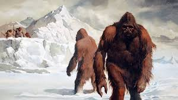

Welcome to the Animal World. This is the section for Imaginary or dead animals.
Buffalo
Buffalo are large members of the Bovidae family. There are two types of buffalo:
the African or Cape buffalo and the Asian water buffalo.
They are dark gray or black animals that look a lot like bulls.
Buffalo are often confused with bison. Early American settlers called bison
"buffalo" because the animals are similar in appearance. However, while bison
are also bovines (a subfamily of bovids), they are in a different genus from
true buffalo. Other bovines include domestic cattle, oxen, yaks, four-horned
antelopes, bongos and kudus, according to the Integrated Taxonomic Information
System (ITIS).
Peacock
Peacocks are large, colorful pheasants (typically blue and green)
known for their iridescent tails.These tail feathers, or coverts,
spread out in a distinctive train that is more than 60 percent
of the bird’s total body length and boast colorful "eye" markings
of blue, gold, red, and other hues. The large train is used in mating
rituals and courtship displays. It can be arched into a magnificent fan
that reaches across the bird's back and touches the ground on either side.
Females are believed to choose their mates according to the size,
color, and quality of these outrageous feather trains.
Yeti
The Yeti, once better known as the Abominable Snowman,
is a mysterious bipedal creature said to live in the mountains
of Asia. It sometimes leaves tracks in snow, but is also said to dwell
below the Himalayan snow line. Despite dozens of expeditions into the remote
mountain regions of Russia, China and Nepal, the existence of the Yeti remains unproven.
The Yeti is said to be muscular, covered with dark grayish or reddish-brown hair,
and weigh between 200 and 400 lbs. (91 to 181 kilograms) It is relatively short
compared to North America's Bigfoot, averaging about 6 feet (1.8 meters) in height.
Though this is the most common form, reported Yetis have come in a variety of shapes.
